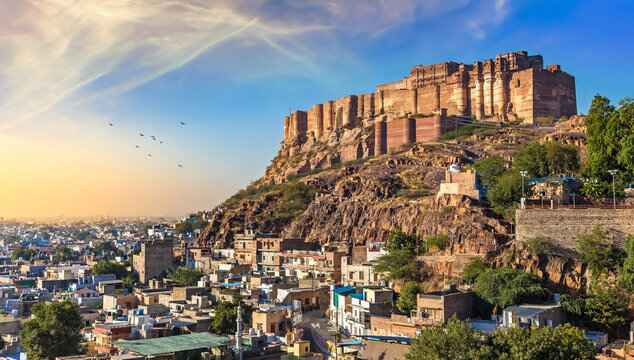

Mehrangarh Fort stands a hundred feet in splendor on a perpendicular cliff, four hundred feet above the sky line of Jodhpur. Burnished red sand stone, imposing, invincible and yet with a strange haunting beauty that beckons . Much has been written about the Citadel of the Sun, for truly, it is one of the most impressive in all Rajasthan. So colossal are its proportions that Rudyard Kipling called it “ the work of giants”. Today, it is acknowledged as one of the best preserved fort in India.